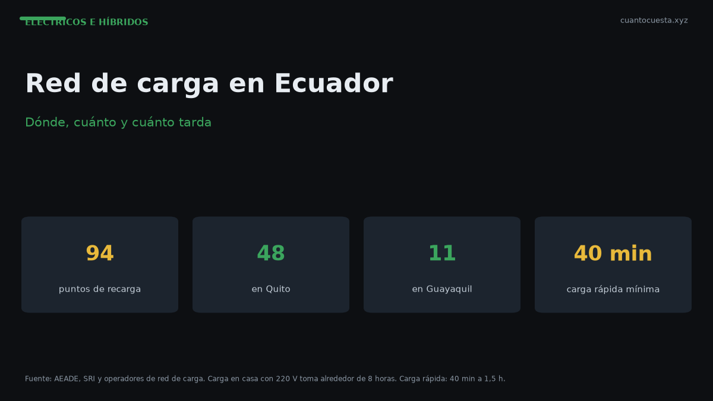

Red de carga en Ecuador: dónde, cuánto y cuánto tarda cargar
Ecuador tiene 94 puntos de recarga: 48 en Quito y 11 en Guayaquil. Tiempos reales de carga rápida y en casa 220V, costos por carga y cómo planificar.

Ecuador tiene 94 puntos de recarga para vehículos eléctricos en todo el país: 48 en Quito y 11 en Guayaquil. Cargar cuesta entre $8 y $10, y el tiempo depende del tipo de carga: 40 minutos a 1 hora y media en carga rápida, o unas 8 horas en casa con conector de 220 voltios.
Esa distribución dice mucho. Quito y Guayaquil concentran 59 de los 94 puntos — el 63%. Si vives fuera de esas dos ciudades, planificar dónde cargas deja de ser un detalle y se vuelve parte de la decisión de compra.
La red en números
| Indicador | Valor |
|---|---|
| Puntos de recarga en Ecuador | 94 |
| Puntos en Quito | 48 |
| Puntos en Guayaquil | 11 |
| Quito + Guayaquil | 59 (63% del total) |
| Electrolineras ultrarrápidas de Kia | 20 |
| Puntos de carga media de Kia (más de) | 200 |
Kia, por su parte, reporta 20 electrolineras de carga ultrarrápida y más de 200 puntos de carga media en el país, además de 49 talleres autorizados en movilidad eléctrica. Ese respaldo es relevante si la marca que compras tiene o no una red propia.
Alrededor de esos 94 puntos públicos hay un mercado de 23 marcas y 42 modelos eléctricos que van de $28.000 a $150.000.
Los tres tipos de carga
No toda carga es igual, y confundirlas es el error más común al comprar un eléctrico.
| Tipo | Dónde | Tiempo | Cuándo usarla |
|---|---|---|---|
| Carga rápida | Electrolinera pública / carretera | 40 min – 1 h 30 min | Viajes largos, emergencias |
| Carga media | Puntos públicos urbanos | Más lenta que la rápida (según punto y vehículo) | Estacionamiento prolongado |
| Carga en casa 220 V | Garaje propio | ~8 horas | Uso diario, carga nocturna |
El dato que cambia todo: si no tienes dónde cargar en casa, tu vida con un eléctrico depende de la carga pública. Y la carga pública en Ecuador está concentrada en dos ciudades.
Tiempos reales
| Escenario | Tiempo | Notas |
|---|---|---|
| Carga rápida | 40 min – 1 h 30 min | Varía por modelo y por el nivel del cargador |
| Carga en casa (220 V) | ~8 horas | Suficiente para cargar durante la noche |
| Carga media pública | Variable | Según punto y tipo de vehículo |
La franja de 40 minutos a hora y media para carga rápida no es un error de medición: es cuánto varía realmente según el modelo y el cargador. Dos autos enchufados al mismo punto pueden tardar distinto.
En casa, 8 horas encaja bien con la rutina: enchufas al llegar de noche, sales con batería al día siguiente. Es la forma más cómoda y, si cargas en horario de tarifa baja, también la más barata.
Cuánto cuesta cargar
| Concepto | Valor |
|---|---|
| Costo de una carga | $8,00 – $10,00 |
| Tarifa establecida | $0,05 – $0,10 por kWh, según el horario |
El costo depende del punto y del tipo de vehículo, y la tarifa regulada varía por horario. Cargar en horario de tarifa baja es la diferencia entre pagar $0,05 o $0,10 por kWh: el doble.
Traducido a costo operativo, esto equivale aproximadamente a $0,02 a $0,03 por kilómetro — frente a $0,048 a $0,072 de un auto a gasolina con Extra o Ecopaís a $3,21 el galón. El desglose completo está en nuestra guía de costo por kilómetro.
Antes de comprar sin cargador en casa
Si vives en departamento sin garaje o en una casa sin acceso a un enchufe de 220 V, evalúa esto antes de firmar:
- ¿Cuál es el punto más cercano a tu casa? No el más cercano en el mapa del concesionario: el que realmente alcanzas y usas.
- ¿Cuál es el punto más cercano a tu trabajo? Si puedes cargar mientras trabajas, el problema se reduce a la mitad.
- ¿Cuánto tardarías en llegar a un cargador y esperar? Suma el trayecto, la cola y el tiempo de carga. Eso es tu "tiempo por semana de carga".
- ¿Cuántas electrolineras hay en tu ruta hacia la costa o la sierra? Para viajes fuera de Quito y Guayaquil, revisa los puntos en el camino antes de salir.
- ¿Qué red de carga te ofrece la marca que compras? Una marca con red propia (como los 200+ puntos de carga media de Kia) cambia la experiencia frente a una marca sin infraestructura.
Con 94 puntos en todo el país, el eléctrico sin cargador en casa es viable en Quito y Guayaquil. Fuera de esas dos ciudades, es una apuesta que debes calcular antes, no después.
Qué revisar en tu ruta habitual
| Situación | Qué verificar |
|---|---|
| Uso urbano en Quito | Cobertura de los 48 puntos, carga media cerca de casa o trabajo |
| Uso urbano en Guayaquil | Cobertura de los 11 puntos, que es bastante menos densa |
| Ciudad intermedia | Presencia real de puntos y opción de carga en casa |
| Viajes a la costa o sierra | Electrolineras en la ruta, tiempo total de parada |
| Sin garaje propio | Viabilidad completa de depender de carga pública |
El costo oculto: el tiempo
Aquí está la parte que los folletos no ponen en tabla. La carga pública no es "llenar el tanque", es una parada planificada.
Una carga rápida son 40 minutos a 1 hora y media. Si esa es tu única forma de cargar, hablamos de una parada de una hora por semana o más, más el trayecto de ida y vuelta al punto. Con cargador en casa, ese tiempo es cero: cargas mientras duermes.
Por eso, en la práctica, la pregunta "¿cuál es la autonomía real que necesito?" siempre viene después de "¿tengo dónde cargar barato y sin perder tiempo?".
También pesa la disponibilidad de servicio técnico: el mantenimiento de un eléctrico exige comprobar el aislamiento de las conexiones entre batería y motor y las masas del vehículo, con equipamiento de diagnóstico específico. En Ecuador persiste falta de capacitación técnica en talleres y repuestos que deben importarse. Kia declara 49 talleres autorizados en movilidad eléctrica; confirma cuántos hay cerca de ti con la marca que elijas.
Veredicto
La red de carga ecuatoriana existe y funciona, pero está concentrada: 94 puntos, 48 en Quito y 11 en Guayaquil. Cargar cuesta $8 a $10 y es entre 2 y 3 veces más barato por kilómetro que la gasolina.
Antes de comprar un eléctrico sin cargador en casa, responde tres preguntas:
- ¿Hay un punto de carga cerca de casa o del trabajo? Si la respuesta es no, reconsidera.
- ¿Vives en Quito o Guayaquil? Fuera de esas ciudades, la red se adelgaza rápido.
- ¿Puedes asumir una parada semanal de hasta hora y media? Si no, prioriza tener 220 V en casa.
Con cargador en casa, el eléctrico es cómodo y barato. Sin cargador en casa y fuera de las dos grandes ciudades, es una apuesta que conviene calcular antes de firmar. Y si el presupuesto no cierra, un híbrido sigue siendo una respuesta válida para el mismo problema.
Sigue leyendo
Carros eléctricos en Ecuador 2026: catálogo, precios y autonomía real
En Ecuador hay 23 marcas y 42 modelos eléctricos, entre $28.000 y $150.000. Catálogo, autonomía
Costo por kilómetro: eléctrico vs gasolina en Ecuador (cálculo real)
Cargar un eléctrico cuesta $8 a $10 y la gasolina $3,21 el galón. Cuánto cuesta cada kilómetro
Híbrido vs eléctrico vs gasolina en Ecuador: cuál conviene según tu uso
Comparación por perfil de uso en Ecuador: ciudad, carretera, kilometraje y acceso a cargador. T
Incentivos tributarios para vehículos eléctricos e híbridos en Ecuador
Qué incentivos tienen los eléctricos y los híbridos en Ecuador, en qué se diferencian y cómo se
Cómo usamos estos datos
Las cifras de esta guía provienen de fuentes públicas oficiales y tarifarios de concesionarios publicados. Los valores son referenciales: tasas municipales, promociones y precios de repuestos varían. Verifica siempre en la entidad o concesionario antes de decidir.